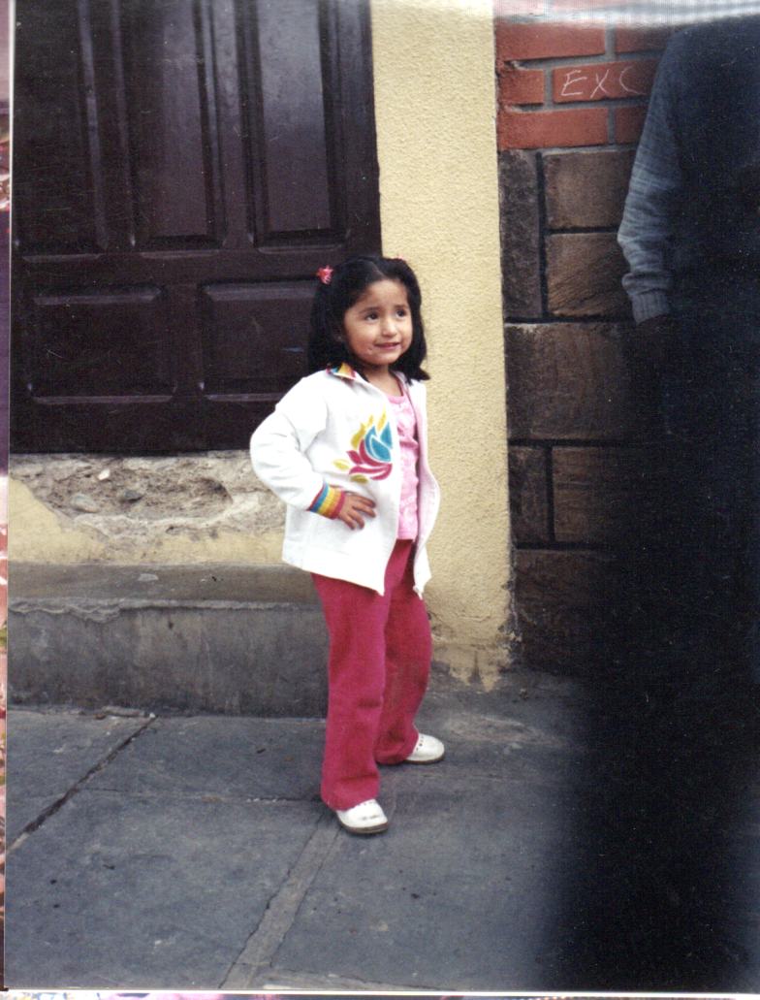
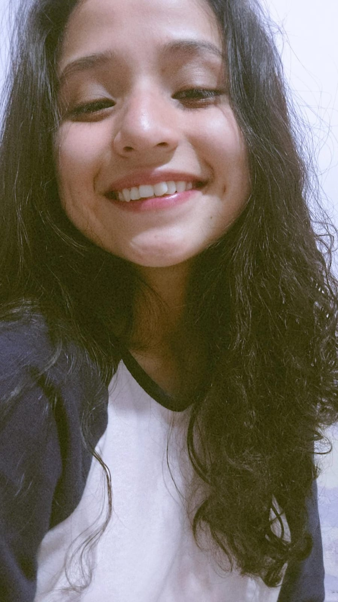

Who I am?
-
My name is Rocío Cruz Zambrana, I am a systems engineer specializing in design, construction and maintenance of websites.
I was born in 2004 in the city of Tarija-Bolivia, I entered the "Elva de Dum" Kindergarten, primary school and part of secondary school I was studying at the "Santa Ana" school; Later, I ended up graduating from the "La Salle" Convenio school. I entered the Domingo Savio Private University, which taught me so much, not only academically, but things for life as well.
- 
- 
-
I chose the Systems Engineering degree because the technological area always caught my attention, I was fascinated by listening to hours and hours of how certain computer systems work, etc. It was when in my second year of college, in August 2023, I was passing the subject of "Web Design I". I have to admit it, thanks to the progress in this matter, I was able to decide what I would do for the rest of my life with dedication
Actualmente, llevo años después de esa fecha, sin arrepentirme ni un segundo de la decisión que tomé en adentrar más mis conocimientos en esta área. Soy desarrolladora de páginas web, una freelancer predispuesta a trabajar contigo!.